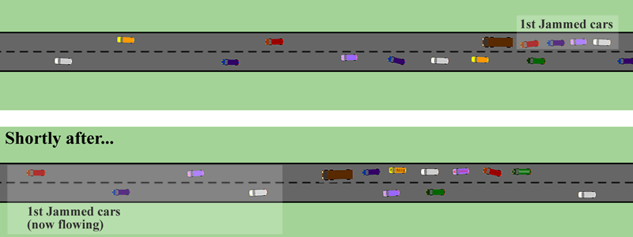

One of the more successful models developed to explain the origin of spiral arms in galaxies is the density wave model. It is particularly good in describing the formation of the spiral structure we see in grand design spirals.
In this model, spiral arms are regions of the thin disk that are denser than average, and move around the galaxy more slowly than the individual stars and interstellar material. To visualise what happens in this situation, it is perhaps easier to start by considering a slow-moving truck driving down a busy freeway.
The cars normally fly down the freeway at high speed, but when they come upon the truck they must slow down to avoid collisions. Seen from the traffic helicopter, the density of the cars behind the truck is high compared to the rest of the freeway, and this region of high density will move with the truck for as long as it remains on the freeway. While the traffic jam behind the truck remains a feature that slowly moves forward, the individual cars involved in the jam are constantly changing. As one car manages to overtake the truck, another will come up from behind to take its place. The traffic jam remains, even though individual cars are only involved in it for a short period of time.

Back in our spiral galaxy, the stars and interstellar material correspond to the cars that are moving much faster along the freeway than the truck and associated traffic jam (the high density region of the spiral arm). As the interstellar material moves into the region of high density, it is compressed which in turn triggers star formation. These newly formed stars continue to orbit around the centre of the galaxy just like the interstellar matter from which they were formed.
The most luminous of these new stars have very short lifetimes compared to the amount of time it takes for them to orbit the galaxy. For this reason they are only found in, or very close to the spiral arm in which they were formed. Since these stars are very luminous, it is actually them, rather than the high density region, that we observe as the spiral features. Less luminous stars are also formed in spiral arms, however, and these objects have longer lifetimes then their bright counterparts. Images of spiral galaxies taken in red light clearly show that these less massive stars are found throughout the galactic disk, including between the spiral arms, as would be expected from this model.
The density wave model is a work in progress, with one of the big remaining questions being how the density waves survive for such long periods. Given the enormous amount of energy required to compress the interstellar gas and dust, one would expect them to die away over time.